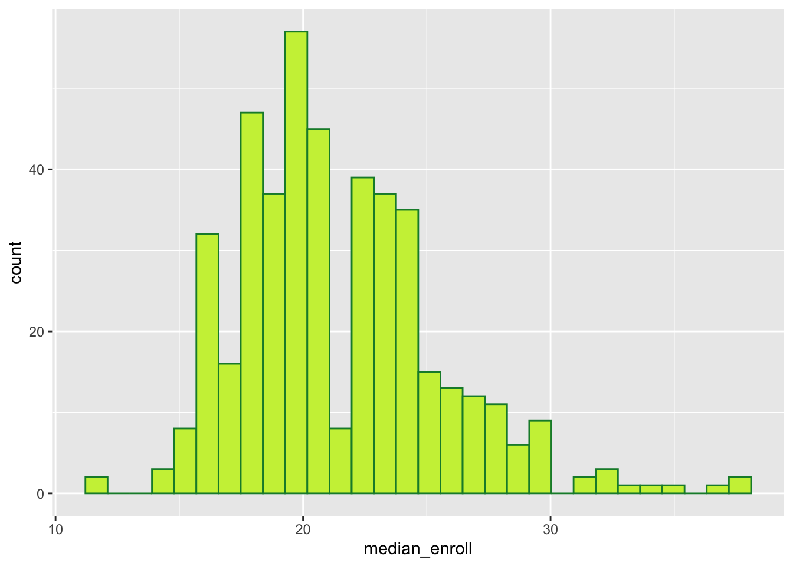

Attaching package: 'dplyr'The following objects are masked from 'package:stats':
filter, lagThe following objects are masked from 'package:base':
intersect, setdiff, setequal, union
Attaching package: 'dplyr'The following objects are masked from 'package:stats':
filter, lagThe following objects are masked from 'package:base':
intersect, setdiff, setequal, unionstudents_3 <- data.frame(
student = c("Y", "Y", "Z", "Z"),
class = c("COMP 101", "BIOL 101", "POLI 101", "COMP 101"),
grade = c("B", "S", "C", "A")
)
enrollments_3 <- data.frame(
class = c("ART 101", "BIOL 101","COMP 101"),
grade = c("B", "A", "A-"),
enrollment = c(20, 18, 19)
)
students_3 |>
left_join(enrollments_3)Joining with `by = join_by(class, grade)` student class grade enrollment
1 Y COMP 101 B NA
2 Y BIOL 101 S NA
3 Z POLI 101 C NA
4 Z COMP 101 A NA student class grade.x grade.y enrollment
1 Y COMP 101 B A- 19
2 Y BIOL 101 S A 18
3 Z POLI 101 C <NA> NA
4 Z COMP 101 A A- 19‘grade.x’ are the individual grade values from the students_3 dataset, and ‘grade.y’ are the average class grades from enrollments_3.
voters <- data.frame(
id = c("A", "D", "E", "F", "G"),
times_voted = c(2, 4, 17, 6, 20)
)
contact <- data.frame(
name = c("A", "B", "C", "D"),
address = c("summit", "grand", "snelling", "fairview"),
age = c(24, 89, 43, 38)
)
# 1. We want contact info for people who HAVEN'T voted
contact |>
anti_join(voters, join_by(name == id)) name address age
1 B grand 89
2 C snelling 43 name address age
1 A summit 24
2 D fairview 38 name address age times_voted
1 A summit 24 2
2 B grand 89 NA
3 C snelling 43 NA
4 D fairview 38 4
5 E <NA> NA 17
6 F <NA> NA 6
7 G <NA> NA 20 id times_voted address age
1 A 2 summit 24
2 D 4 fairview 38
3 E 17 <NA> NA
4 F 6 <NA> NA
5 G 20 <NA> NA sid grade sessionID
1 S31185 D+ session1784
2 S31185 B+ session1785
3 S31185 A- session1791
4 S31185 B+ session1792
5 S31185 B- session1794
6 S31185 C+ session1795 sessionID dept level sem enroll iid
1 session1784 M 100 FA1991 22 inst265
2 session1785 k 100 FA1991 52 inst458
3 session1791 J 100 FA1993 22 inst223
4 session1792 J 300 FA1993 20 inst235
5 session1794 J 200 FA1993 22 inst234
6 session1795 J 200 SP1994 26 inst230[1] 5844[1] 3[1] 1718[1] 6`stat_bin()` using `bins = 30`. Pick better value with `binwidth`.
Students most commonly have classes with around 15-25 students in them.
Joining with `by = join_by(sessionID)` sid sessionID grade
1 S31245 session2326 A
2 S31938 session2326 A
3 S32046 session2326 A-
4 S32226 session2326 A
5 S32415 session2835 B
6 S31968 session3104 A
7 S31470 session3658 B
8 S32484 session3658 A-
9 S31470 session3798 B
10 S32022 session3798 A
11 S31470 session3799 A
12 S32415 session3799 B+Joining with `by = join_by(grade)`# A tibble: 443 × 2
sid avg
<chr> <dbl>
1 S31185 2.41
2 S31188 NA
3 S31191 NA
4 S31194 3.36
5 S31197 3.35
6 S31200 2.2
7 S31203 3.82
8 S31206 2.46
9 S31209 NA
10 S31212 3.67
# ℹ 433 more rowsJoining with `by = join_by(sessionID)`Warning in left_join(courses, grades): Detected an unexpected many-to-many relationship between `x` and `y`.
ℹ Row 57 of `x` matches multiple rows in `y`.
ℹ Row 1931 of `y` matches multiple rows in `x`.
ℹ If a many-to-many relationship is expected, set `relationship =
"many-to-many"` to silence this warning.Joining with `by = join_by(grade)`# A tibble: 364 × 2
iid inst_avg
<chr> <dbl>
1 inst265 1.3
2 inst444 1.7
3 inst513 1.85
4 inst200 2
5 inst507 2.2
6 inst445 2.3
7 inst420 2.6
8 inst262 2.65
9 inst176 2.66
10 inst234 2.7
# ℹ 354 more rowsJoining with `by = join_by(sessionID)`Warning in left_join(courses, grades): Detected an unexpected many-to-many relationship between `x` and `y`.
ℹ Row 57 of `x` matches multiple rows in `y`.
ℹ Row 1931 of `y` matches multiple rows in `x`.
ℹ If a many-to-many relationship is expected, set `relationship =
"many-to-many"` to silence this warning.Joining with `by = join_by(grade)`
Joining with `by = join_by(sessionID)`# A tibble: 39 × 2
dept dept_gp
<chr> <dbl>
1 o 3.08
2 M 3.10
3 K 3.17
4 G 3.18
5 B 3.2
6 J 3.22
7 T 3.23
8 b 3.25
9 F 3.30
10 d 3.31
# ℹ 29 more rows